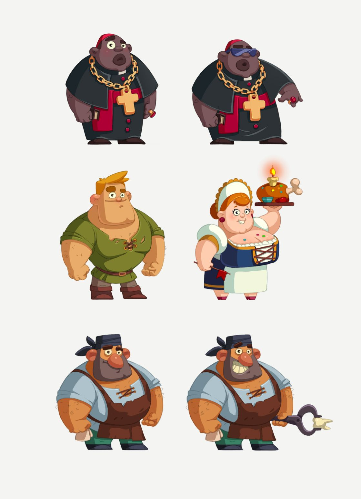

Our Gamified Platform Provides!!!
The gamified platform "LawyerUp" offers a transformative educational journey in children's rights advocacy. In its beginner level, "Rights Apprentice," young players embark on a captivating adventure, learning foundational rights through simple, relatable scenarios. As they progress to the intermediate level, "Rights Advocate," challenges deepen, urging critical thinking and introducing legal terminology. Finally, in the advanced level, "Rights Defender," players tackle complex legal cases and grapple with ethical dilemmas. With each level, this platform empowers children to become champions of justice, armed with the knowledge and skills to protect and uphold children's rights, making the world a safer, fairer place for all.

Character customization
Educational content